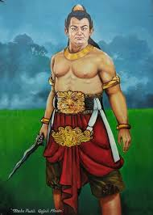
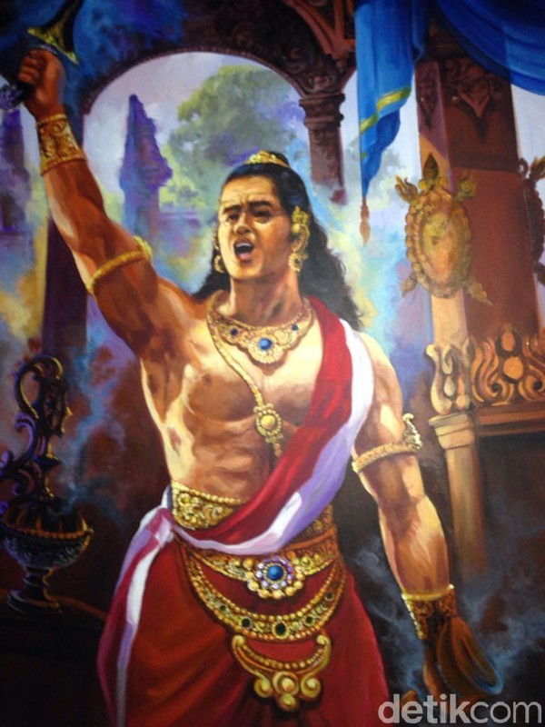

Maha Patih Gajah Mada
Seorang panglima perang dan Mahapatih DI KERAJAAN MAJAPAHIT.
Juga dikenal sebagai Jirnnodhara. Ia dianggap dalam manuskrip Jawa Kuno, puisi, dan prasasti sebagai orang yang membawa kerajaan Majapahit ke puncak kejayaannya.


Biografi
Perjalanan hidup Gajah Mada
Gajah Mada adalah salah satu tokoh paling terkenal dalam sejarah Nusantara, terutama pada era Kerajaan Majapahit. Ia menjabat sebagai mahapatih (perdana menteri) di bawah pemerintahan Raja Hayam Wuruk pada abad ke-14. Gajah Mada dikenal dengan Sumpah Palapa, di mana ia berjanji untuk tidak menikmati kenikmatan duniawi sebelum berhasil mempersatukan seluruh Nusantara di bawah kekuasaan Majapahit. Melalui taktik militer dan diplomasi yang cerdas, Gajah Mada berhasil memperluas wilayah Majapahit hingga mencakup sebagian besar kepulauan Indonesia, termasuk Sumatra, Kalimantan, dan Bali.
Namun, akhir kariernya sedikit ternoda oleh kekalahan dalam Perang Bubat, yang melibatkan perseteruan dengan Kerajaan Sunda. Meskipun begitu, warisan Gajah Mada tetap diakui sebagai tokoh yang berhasil mewujudkan visi persatuan Nusantara. Setelah masa jayanya, Gajah Mada menghilang dari catatan sejarah, dan banyak spekulasi muncul mengenai nasibnya. Hingga kini, ia tetap dikenang sebagai pahlawan nasional Indonesia yang memainkan peran penting dalam pembentukan identitas kebangsaan dan persatuan.